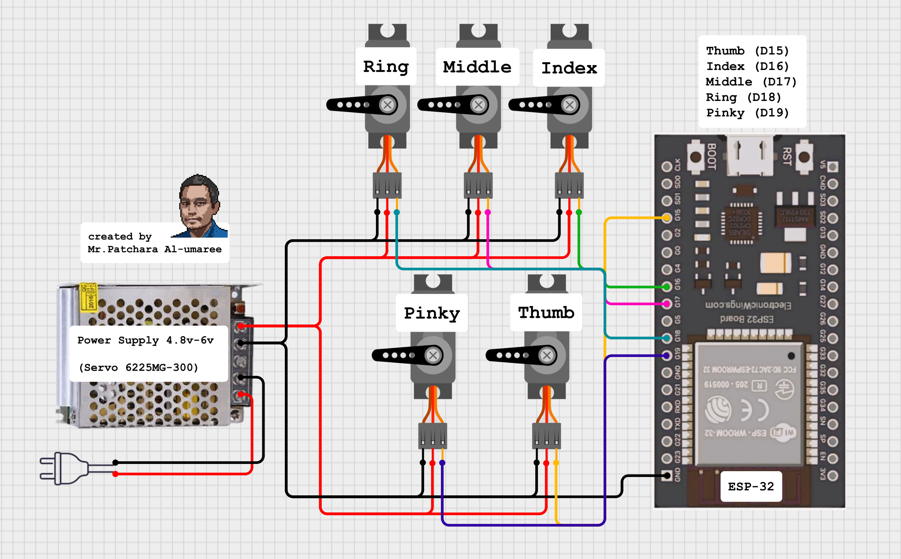
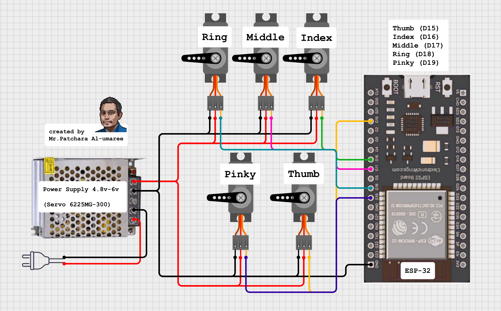

OpenCV Robotic Hand
Hand-tracking control for a 3D-printed InMoov robotic hand
Python + OpenCV
ESP32 + Servo Control
3D Printing
Computer Vision
Built a computer-vision pipeline that tracks hand movements via webcam and mirrors them on a 3D-printed robotic hand. The Python app interprets finger positions with OpenCV, translates them into servo commands, and streams control to an ESP32 for responsive motion.
Build Highlights
Hardware
3D-printed InMoov-inspired hand, five high-torque servos, string-driven fingers, and an ESP32 microcontroller.Computer Vision Control
OpenCV hand-tracking maps detected finger states to servo angles, sending live commands over serial to the ESP32.GUI + Tuning
Python GUI for calibration, COM-port selection, and finger sensitivity tuning for smooth mirrored motion.Recognition
Featured at the university exhibition and demonstrated at Kasetsart University Demonstration School to inspire students.Project Notes
- Real-time hand tracking drives individual servos for each finger.
- Serial link from Python to ESP32 keeps motion responsive and configurable.
- Designed as an educational build to understand computer vision, hardware control, and 3D printing.
- Emphasis on smooth mechanical design and robust string routing to prevent drift.
I am delighted that a project first built for self-learning became a hands-on demo for students and showcased the power of combining computer vision with robotics.
Gallery


 


Location
Bangkok, Thailand — educational prototype for computer vision and robotics